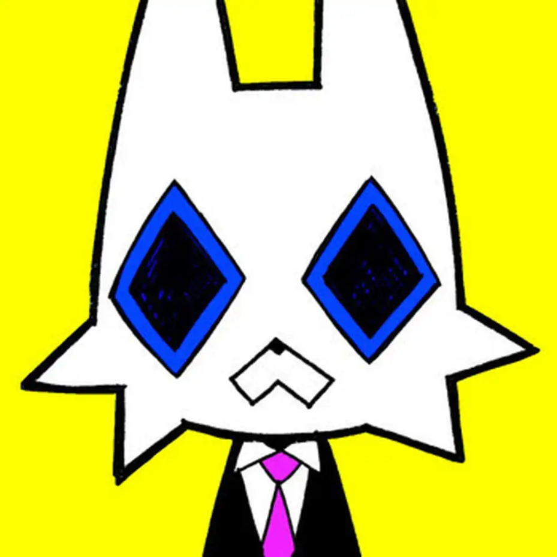

Worry Cat
| Published On | August 1, 2023 |
|---|
An animation featuring Worry Cat and their day-to-day life and longing for a better lifestyle. Worry Cat is later confronted by their boss regarding the drop in their performance. Angered Worry Cat scratch the boss on snout.
Worry Cat does not face any consequences for their assault, but in instead is shoved backed into the cubical where the cycle begins.
According to the video description uploaded on newgroundsNewgrounds Upload, the audio and animation took 8 days to complete.
Video Outline
[ Insert outline of entire video ]
Lyrics
Life of a worry-cat, sorry-cat blues
Claws hung up on the post, contract's overdue
Through slitted eyes, these papers all seem the same
But kitty cat's still signing his worthless name
Life of a worry-cat, sorry-cat hold on that
Thought that you're small and invisible
Crystal spheres full of stars and no places to run
Just stand there with a gaze irresistible
Worry-cat blues come in living bills
You know your brother in law makes 7 whole figures
Maybe I could get there with a little overtime
As long as we're cracked we're already floating
Sorry cat, worry that I couldn't afford
The lights are flickering out and the roaches are wakened
But we already get it, you're worth so much more
With triple insulation and marble floors
Life of a worry-cat, sorry-cat hold on that
Thought that you're small and invisible
Crystal spheres full of stars and no places to run
Just stand there with a gaze irresistible
Leap with your fullest grace
Away from blocks of enterprise you should've hate
Your fault in the first place
That you didn't spring 'till now, but it's not too late
A rat race game to the end, in the end where glory yells and calls
You'll make it through to the end, in the end where nothing matters at all
Life of a poppy-cat, candy-cat blues
Wish I took the chance but I hadn't nothing to lose
Myself in minty dried pastures and mountains of booze
The world could nuke itself and make for such a spirited view
Life of a worry-cat, sorry-cat finding plateaus
In your work unacceptable
Performance reviews identically say
That your podium in life is replaceable
Life of the worry-cat, copy-cat fight for the
Fact that you're worth more than a decimal
Complain about grey numbers on a gridded plane
Rose tinted turns the green into rich champange
Life of a worry-cat, copy-cat blues
Chain up your tie and take abuse
'Cuz even if he wanted to roar
For a raise he didn't think he deserved it before
Interpretation
The song is a criticism against capitalism and the way it effects a person's perceived self-worth. Worry Cat is wasting his life away, doing repetitive tasks, in hopes to earn enough money to finally achieve the ideal life.